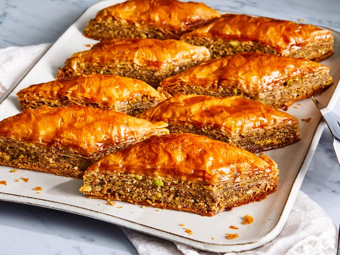

Greek Baklava Recipe

Description
Baklava is a delicious Greek pastry dessert made up of layers of crispy phyllo dough, chopped nuts, and honey syrup that's so easy to make.
A Greek friend showed me how to make this fabulous recipe.
Ingredients
- Phyllo Dough
- Nuts
- Butter
- Cinnamon
- Water
- Sugar
- Vanilla
- Honey
Steps
-
Gather all ingredients. Preheat the oven to 350 degrees F(175 degrees C).
Butter the bottoms and sides of a 9x13-inch pan.
- Chop nuts and toss with cinnamon. Set aside.
-
Unroll phyllo dough. Cut whole stack in half to fit pan.
Cover phyllo with a dampened cloth to keep from drying out as you work.
Place two sheets of dough in pan, butter thoroughly with a pastry brush.
Repeat until you have 8 sheets layered.
-
Sprinkle 2 to 3 tablespoons of nut mixture on top.
Top with two sheets of dough, melted butter, nuts, layering as you go.
The top layer should be about 6 to 8 sheets deep.
-
Using a sharp knife cut into diamond or square shapes all the way to the bottom of the pan.
You may cut into 4 long rows then make diagonal cuts.
Bake for about 50 minutes until baklava is golden and crisp.
-
Make sauce while baklava is baking. Boil sugar and water until sugar is melted.
Add vanilla and honey. Simmer for about 20 minutes.
- Remove baklava from the oven and immediately spoon sauce over it. Let cool.
- Serve in cupcake papers. This freezes well. Leave it uncovered as it gets soggy if it is wrapped up.
- Enjoy!
Home